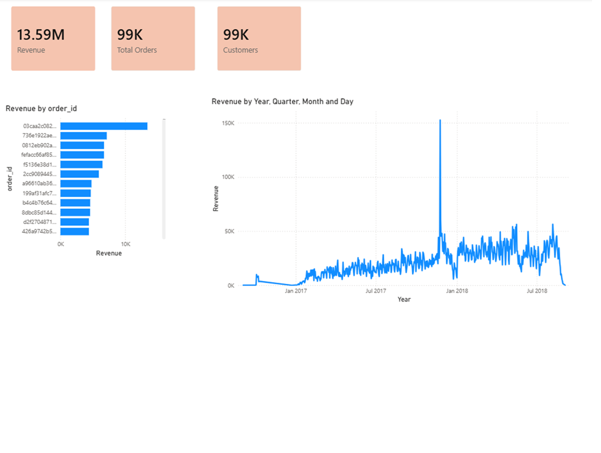
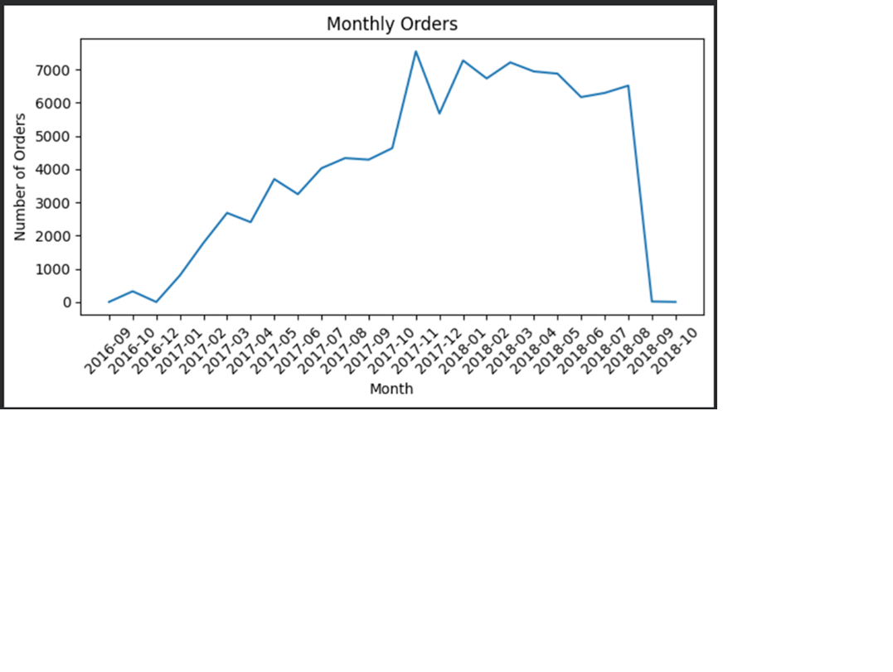
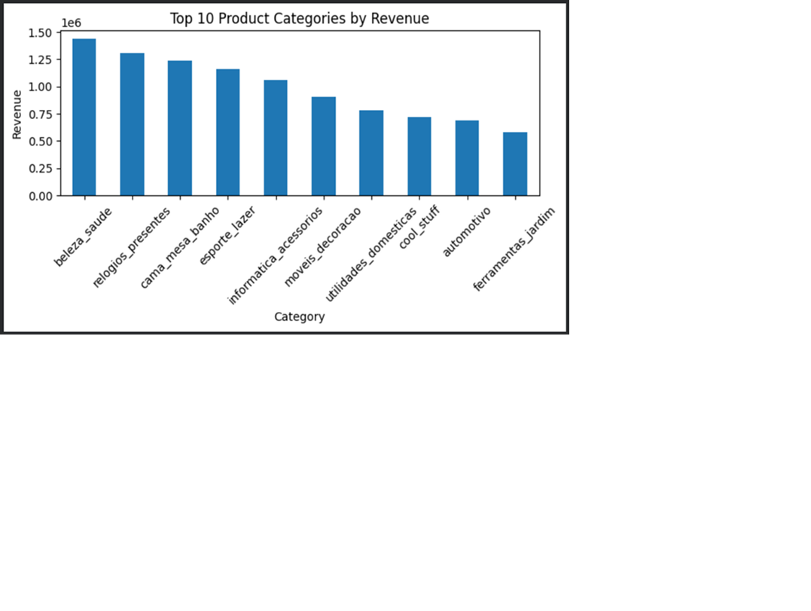
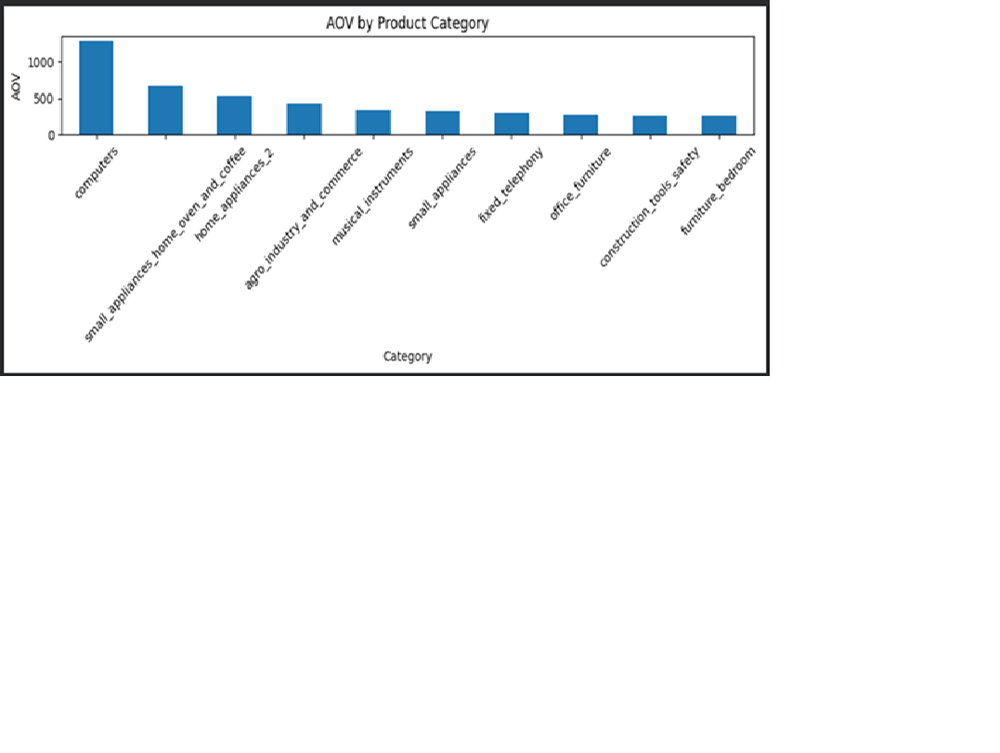
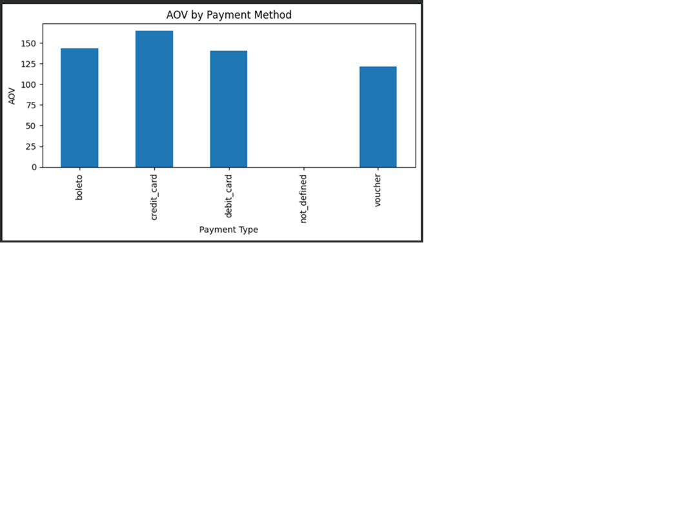

Customer Behavior & Revenue Analysis
Analyzed 99K orders and $13.5M revenue to understand customer behavior, growth trends, and business performance.
Revenue shows strong growth from 2017 with seasonal peaks.


Top categories dominate revenue and reflect essential consumer demand.

AOV varies significantly across categories and payment methods.


Improving retention strategies and targeting first-time buyers can significantly increase revenue. Leveraging seasonal campaigns can further drive growth.